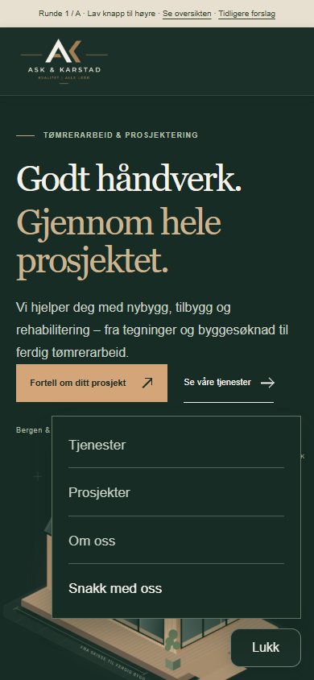
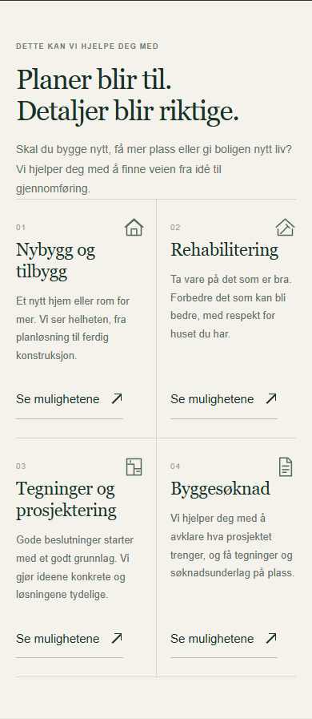
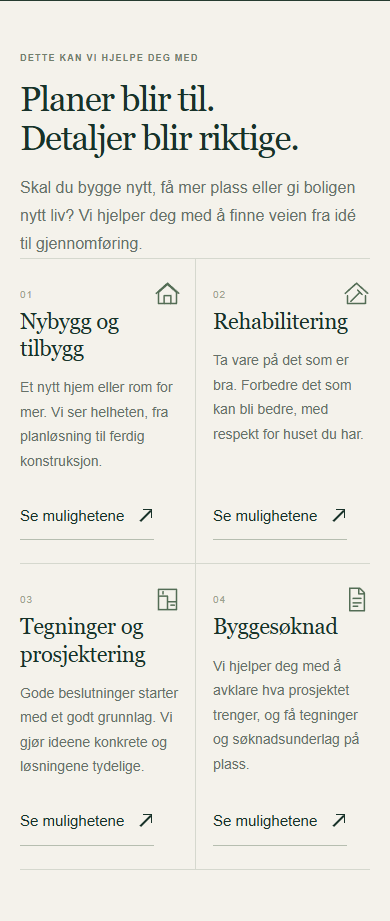
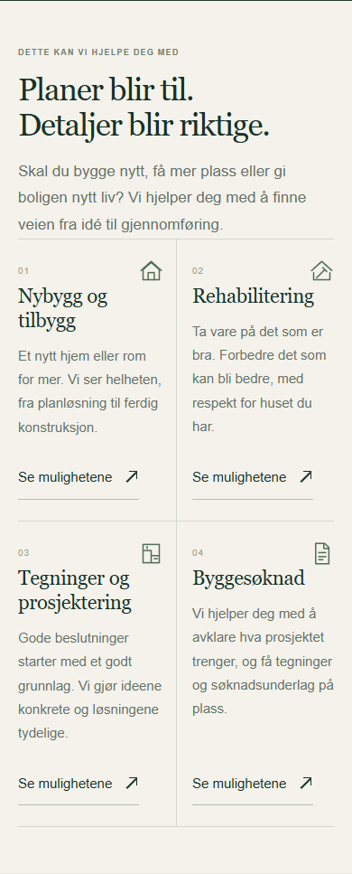
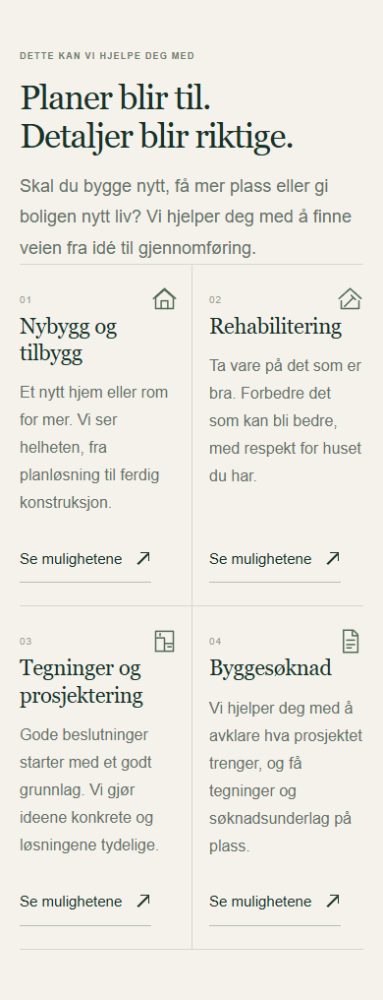

Alternativ A · Valgt
Lav knapp til høyre
Åpne hele forslaget →
Fire runder · Fire alternativer
Vinneren i hver runde bygger videre til neste. Alle forslagene kan åpnes som hele nettsider.
Valgt: A. Nær høyre tommel, liten flate og mindre visuelt inngrep enn full bunnrad.
Valgt: B. 16 px i brødtekst og 14 px i kort gir bedre lesbarhet uten for mye linjebryting.

Alternativ A
Åpne hele forslaget →

Alternativ B · Valgt
Åpne hele forslaget →

Alternativ C
Åpne hele forslaget →

Alternativ D
Åpne hele forslaget →
Valgt: B. 48 px er romslig å treffe og gir mindre ekstra høyde enn 52/56 px.
Valgt: B. Tydelige etiketter, 16 px felttekst og 52 px sendeknapp med god kontrast.